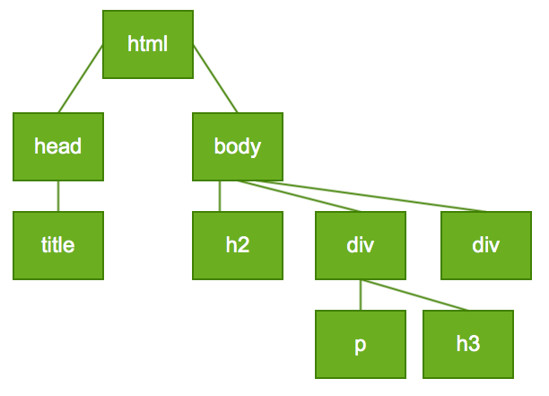

TI1505: JavaScript
Claudia Hauff
Today: a whirlwind tour of JavaScript
The lecture today covers chapter 8 of the book Web Programming Step by Step. The book's lecture slides for this chapter are available here.
JavaScript: a Client-side technology
Fetching & processing a Web page:
- Browser sends a GET request for a Web page to a Web server
- [Web server executes scripts (PHP, ASP, etc.)]
- Web server sends (generated) HTML file to browser
- [Browser executes scripts (JavaScript, etc.)] & renders the page
JavaScript makes Web page interactive and responsive to user actions.
Reminder: server-side scripting
Previous lectures: PHP (a server-side technology)
- Source code is private, result of script execution is returned (in HTML), not the script itself
- HTML can be rendered by any browser
- Server-side scripts can access additional resources (mostly databases)
Client-side scripting
- Source code is always visible ("View Page Source")
- Script execution by the browser relieves the Web server
- JavaScript is event-driven: code blocks executed in response to user actions (click, hover, move, etc.)
JavaScript is ...
- a client-side technology
- not related at all to the programming language Java
- not equally supported in all browsers (follows int the footsteps of CSS, HTML)
- used to make the Web experience more interactive
- Alter page appearance based on events
- Alter interaction based on browser type, language or cookie usage
- Calculations are performed on the client:
JavaScript vs. OO languages
| JavaScript | OO [Java] |
|---|---|
| interpreted | compiled |
| program is readible (more or less, example) | byte code |
| fewer data types | -- |
| variables don't have to be declared | variables need to be declared |
| silent errors | Errors and Exceptions |
| focus on functions | focus on classes & objects |
| most often coupled with CSS & HTML | -- |
JavaScript vs. PHP
| JavaScript | PHP |
|---|---|
| interpreted | interpreted |
| leans towards OO | more procedural |
| focus: UI, document-user interaction | focus: files/forms, HTML output |
| runs on the browser (client) | runs on the Web server |
The script tag
<script src="javascript_code.js" type="text/javascript">
scriptinside HTML's<head>and</head>- JavaScript code usually kept in one (or more) separate files
- JavaScript can also be directly embedded in HTML (avoid if possible)
JavaScript embedded in HTML
<!DOCTYPE html>
<html>
<head>
<script>
function helloWorld()
{
alert("Hello World!");
}
</script>
</head>
<body>
<button onclick="helloWorld()">Hello World Button
</body>
</html>
bad style: no separation of presentation, content and interaction
JavaScript in a separate file
<!DOCTYPE html>
<html>
<head>
<script src="helloworld.js" type="text/javascript">
</head>
<body>
<button onclick="helloWorld()">Hello World Button
</body>
</html>
helloWorld.js
function helloWorld()
{
alert("Hello World!");
}
JavaScript's alert
- Pop's up a message
- Style cannot be changed through CSS (defined by OS)
alert("content goes here");
Variables in JavaScript
var name = "Tom"; //variables are declared with 'var' (case sensitive)
var grade = 9; //loosely typed (not specified, but still there)
var average = 8.5; //same type as grade
Types in JavaScript:
NumberBooleanStringArrayObjectFunctionNullUndefined
If unsure, use typeof
Examples of typeof
// Numbers
typeof 10 === 'number';
typeof 8.5 === 'number';
typeof Infinity === 'number';
typeof NaN === 'number'; // important to remember!
// Strings
typeof "test_string" === 'string';
typeof (typeof 1) === 'string'; // typeof always return a string
// Booleans
typeof true === 'boolean';
typeof false === 'boolean';
// Undefined
typeof undefined === 'undefined';
typeof not_defined_before === 'undefined'; // undefined variable
// Objects
typeof {a:5} === 'object';
typeof [10, 9, 8] === 'object';
typeof new Date() === 'object';
// Functions
typeof function(){} === 'function';
typeof Math.cos === 'function';
String
var name = "Tom Jones";
var firstName = name.substring(0, name.indexOf(" ")); //"Tom"
var nameLength = name.length; //9 (a property, not a method)
var nickname = 'Tommy'; //also possible
var combined = name + " with nick " + nickname;
var num1 = "10";
var num2 = 20;
var num3 = num1 + num2; //"1020", different from PHP!!
- The typical string functions as known from other languages are available:
charAt, indexOf, lastIndexOf, replace, split, substring, toLowerCase, toUpperCase - Use the Firebug console to test your JavaScript!
var vs. no var
- No difference when in global scope
- Within functions,
varcreates a local variable - Within functions, no
vargoes up to global scope to find it
JavaScript is event-driven
 Image source: Web Programming Step by Step
Image source: Web Programming Step by Step
- JavaScript snippets in response to events (user actions)
- Event-driven programming: programming style driven by user events
A responsive UI control
<!DOCTYPE html>
<html>
<head>
<script>
function helloWorld()
{
alert("Hello World!");
}
</script>
</head>
<body>
<button onclick="helloWorld()">Hello World Button</button>
</body>
</html>
In general: JavaScript functions
function name(arg1,arg2,arg3,...,argn)
{
statement;
statement;
statement;
}
//concrete example
function add(x,y)
{
return x+y;
}
Handling events
<element onclick="function_name();"> //just one of many event handlers
//specific examples
<button onclick="alert(5+4)">alert(5+4)</button>
<button onclick="alert('5'+4)">alert('5'+4)</button>
<button onclick="alert('Tom'.substring(0,1))">First letter of 'Tom'</button>
Advice: user alert() VERY sparingly.
DOM: Document Object Model
DOM: a set of JavaScript objects which represent each element on a Web page
DOM: Document Object Model
- Extract an element's state
- Is the checkbox checked?
- Is the button disabled?
- Is a
<h1>appearing on the page?
- Change an element's state
- Check a checkbox
- Disable a button
- Create an
<h1>element on a page if none exists
- Change an element's style
- Change the color of a button
- Change the size of a paragraph
- Change the background color of the page
DOM element objects
Every element on a Web page is associated with a DOM object

Image source: Web Programming Step by Step
Tools exist to view DOM elements of Web pages, for example DOM Inspector (test it)
document.getElementById
//general way of accessing DOM elements
var name = document.getElementById("id")
//specific example
<button onclick="
var tb = document.getElementById('out');
tb.value = 'Hello World!';"
>Say Hello World!</button>
<input type="text" id="out">
document.getElementById
What happens if the id is not unique?
//general way of accessing DOM elements
//returned is the DOM object for an element with the id
var name = document.getElementById("id")
//specific example
<button onclick="
var tb = document.getElementById('out1');
tb.value = 'Hello World!';"
>Say Hello World!</button>
<input type="text" id="out1"> <input type="text" id="out1">
Not just forms ...
<button onclick="
var span1 = document.getElementById('span1');
var span2 = document.getElementById('span2');
var tmp = span1.innerHTML;
span1.innerHTML = span2.innerHTML;
span2.innerHTML = tmp;
">Swap the span content</button>
<span id="span1" style="background-color:red"> <b>Hello</b> </span>
<span id="span2" style="background-color:green">World</span>
- form controls: use
valueto change the text - other elements: use
innerHTMLto change the text - arbitrary HTML can be injected into the page via
innerHTML(don't overdo it)
DOM object properties
<div id="main" class="main_class">
<p>Hello <em>World!</em></p>
<img id="worldImage" src="images/1.jpg" />
</div>
| Property | Example |
|---|---|
$("main").tagName is DIV | |
$("main").className is main_class | |
$("main").innerHTML is \n | |
$("worldImage").src is images/1.jpg |
DOM object properties (forms)
<input id="firstName" type="text" />
<input id="agreed" type="checkbox checked="checked" /> Did you read the terms and conditions?
| Property | Example |
|---|---|
$("firstName").value may be "Tom" | |
$("agreed").checked is true | |
$("agreed").disabled is false | |
$("firstName").readOnly is false |
Style adjustments
<!-- HTML -->
/* JavaScript */
window.onload = function() {
document.getElementById("clickme").onclick = changeColor;
};
function changeColor() {
var clickMe = document.getElementById("clickme");
clickMe.style.color = "red";
}
Style adjustments: common errors
- not
button1.color="red", butbutton1.style.color - not
button1.style.font-size="10px", butbutton1.style.fontSize - not
button1.style.width=10, butbutton1.style.width="10px"
typeof(Number)
var grade = "10";
var average = 8.5;
var combined1 = grade * average; // 85
var combined2 = grade + average; // "108.5"
var combined3 = (grade + average)*2; //217
- Integers and floats (doubles) are of the same type
- Standard math operators:
+ - * / += ++, etc. - Automatic conversion (with a small danger: last line above)
Comments
// the same as in Java, either single line
/* or
multi
line
comments
*/
Don't get confused by the commenting mess!
- HTML:
<!-- commenting here --> - CSS/JS/PHP:
/* commenting here */ - Java/JS/PHP:
// commenting here - PHP:
# commenting here
typeof(String)
//explicit conversion to numbers
var age = "75, Tom Jones";
var n1 = parseInt(name); //75
var n2 = parseFloat("nothing1.22"); //NaN
//string elements
var properName = "Tom Jones";
var firstLetter = properName.charAt(0);
var firstLetter = properName[0]; //alternative way to access, might fail
var lastLetter = properName.charAt(properName.length-1);
for loop
//you know this already from Java
var sum = 0;
for(var i = 0; i < 5; i++)
{
sum += i;
}
//reverse a string
var s1 = "Hello World";
var s2 = "";
for (var i = s1.length-1; i>=0; i--)
{
s2 += s1.charAt(i);
}
//s2: "dlroW olleH"
Calculations with Math
//Math is an object
var roundOff = Math.floor(3.9888); //3
var roundUp = Math.ceil(3.00001); //4
var rounded = Math.round(3.001); //3
var absolute = Math.abs(-3.444); //3.444
var maximum = Math.max(4,2); //4
var randVal = Math.random(); //returns a value in [0,1)
//more of the usual suspects
Tip: use Firebug for a complete overview
null vs. undefined
var grade1 = null;
var grade2 = 9;
var averageGrade;
// at this point
// grade1 == null
// averageGrade is undefined
undefined: has not been referenced before, it does not existnull: it exists, but the value is unknown
Logical operators
JavaScript has both:
==(comparison of value)===(comparison of value & type)
This is an artifact of loose typing.
var x = 5;
var y = 5;
var z = "5";
var a = null;
var b; //undefined
var c = "5b";
x == y; // true
x === y; // true
x == z; // true
x === z; // false (wrong type)
x == a; // false
x == b; // false
a == b; // true !!
a != b; // false
a === b; // false (not of the same type)
a !== b; // true
x == c; // false
<, > <= >= exist as well.
if ... else
- You should know this from Java
- Almost anything can be a
condition
if(condition)
{
statements;
}
else if(condition)
{
statements;
}
else
{
statements;
}
if ... else
- False:
0, 0.0, NaN, "", null, undefined(but not"0") - True: anything else
- Do not make too many assumptions, check if you are unsure (Firebug)
- A
!!(or!) is a casted (inverted) Boolean
//anything can be used as a Boolean
var x = true; // evaluates to true
var y = 0;
var z = 1;
var name = "Tom";
var c = "0";
if(x) { /* we end up here */ }
if(x == true) { /* we end up here */ }
if(y) { /* we do not end up here */ }
if(z) { /* we end up here */ }
if(name) { /* we end up here */ }
if(name==true) { /* we do not end up here */ }
if(c) { /* we end up here */ }
//casted Boolean
var bx = !!(z); // true, typeof(z): number, typeof(bx): boolean
while loops
- You should know this from Java
while(condition)
{
statements;
}
do(condition)
{
statements;
} while(condition);
//break & continue also exist
Popups
alert(a message, "OK" as only option)confirm(a message, "OK" and "Cancel" as options)prompt(a message, asks for user input)
var x = alert('This is a message');
// x is undefined
var x = confirm('This is a message');
// x is either true or false
var x = prompt('This is a message');
// x contains the returned string (null if nothing was entered)
Arrays
var arrayName = []; //empty array, arrayName.length=0
var grades = [1,2,3,4,5,6,7,8,9,10];
var lowest = grades[0];
var highest = grades[9]; //grades[10] is undefined
grades[10] = 11;
var mixed = [1,2,"grade 3",4,5]; //mixed types are possible, no conversion
Array methods
Mixed type ability gives a hint: arrays are the workhorse of JavaScript, simulate lists, queues, stacks (we know this already from PHP)
var grades = [1,2,3,4,5,6,7,8,9,10];
grades.push(11); //[1,2,3,4,5,6,7,8,9,10,11];
grades.unshift(0); //[0,1,2,3,4,5,6,7,8,9,10,11]; returns new length of the array
grades.pop(); //[0,1,2,3,4,5,6,7,8,9,10]; returns new length of the array
grades.shift(); //[1,2,3,4,5,6,7,8,9,10]; returns number removed
grades.sort(); //[[1, 10, 2, 3, 4, 5, 6, 7, 8, 9]; by default lexicographic sort
grades.sort(function(a,b){return a-b;}); // much better, sorts numerically ascending
grades.sort(function(a,b){return a-b;}); // sorts numerically descending
//push,pop -> queue
//unshift/shift -> stack
Array methods
Arrays are also used as maps
var grades = [1,2,3,4,5,6,7,8,9,10];
grades["test"] = 20; // [1,2,3,4,5,6,7,8,9,10] (does not appear here)
grades.length; // 10
grades["test"]; // returns 20
A bit more about strings
Mixed type ability gives a hint: arrays are the workhorse of JavaScript, simulate lists, queues, stacks (we know this already from PHP)
var name = "Tom Jones";
var tokens = name.split(" ") // ["Tom", "Jones"]
tokens.reverse(); // ["Jones", "Tom"]
var name2 = tokens.join("-");// "Jones-Tom"
//beware, reverse() transform the array, join returns a new string
arguments array
function example()
{
for(var i=0; i < arguments.length; i++)
{
alert(arguments[i]);
}
}
- Every function contains
arguments, array with passed parameters - Nice: functions can have varying numbers of parameters
Date object
Date has many methods to set/get parts of a date (seconds, minutes, time zone offset, etc.)
var today = new Date(); //Date {Fri Jan 10 2014 10:07:44 GMT+0100 (CET)}
var tomor = new Date(2014,0,11); //Date {Sat Jan 11 2014 00:00:00 GMT+0100 (CET)}
//getDay starts at 0 (Sunday) and ends at 6 (Saturday)
//Date stores months from 0-11
eval function
Treats a String as JavaScript code and runs it (if user input, a security hazard)
<button onclick='
eval("
var a = 5;
var b = 6;
alert(a+b);
");'>
Run eval code</button>
OO for JavaScript
- Small programs often don't need it
- JavaScript has functions as first-class citizens
- Large projects benefit from OO
- OO groups related data and behavior
- Built-in objects: Strings, arrays, HTML/DOM nodes
Anonymous objects
var pt = {
x: 10,
y: 20
};
alert(pt.x +", " + pt.y + ", type: " + typeof(this);
Adding a method
var pt = {
x: 10,
y: 20,
sumOfXY: function() {return this.x+this.y;}
};
alert(pt.x +", " + pt.y + ", type: " + typeof(this) +", sum="+pt.sumOfXY();
Simulating a constructor through a function
function Point(xVal, yVal)
{
this.x = xVal;
this.y = yVal;
this.sumOfXY = function() { return this.x+this.y;}; //function in a function!
}
var p = new Point(10,20);
- An object constructor is just a normal function
- What does JS do with
new?- new anonymous empty object is created and used as
this - returns new object at the end of the function
- new anonymous empty object is created and used as